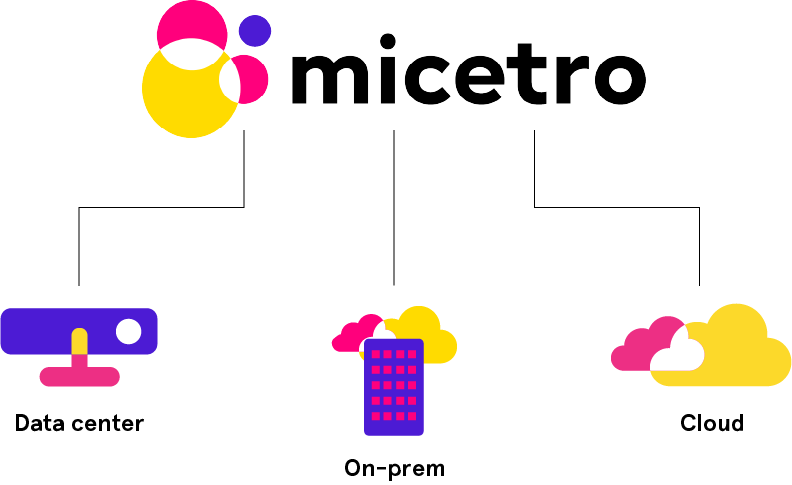
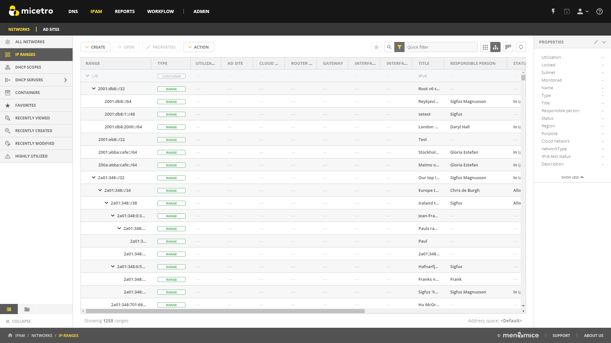
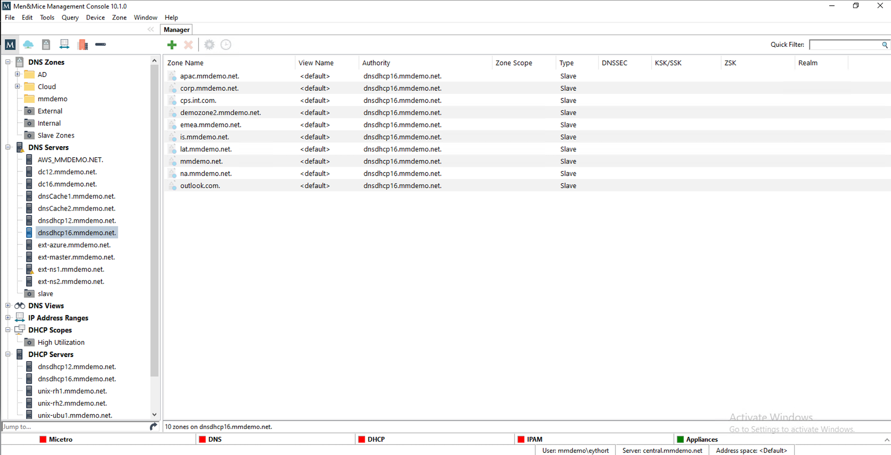

Architecture
Architecture overview
Micetro is a non-destructive, software-defined overlay for managing DNS, DHCP, and IPAM in diverse network environments.
{kind=link}
non-destructive: Micetro does not interfere with network structure or service integrity
software-defined: Micetro can be deployed using virtual machines (no hardware component is necessary) and is using a single-layer API for orchestration
overlay: Micetro is capable of managing multiple DNS and DHCP services dynamically, on-premise, in data centers, or in cloud platforms
Components
Micetro consists of the following components:
- Men&Mice Central
The server component of Micetro, running the orchestration logic for all configured services. Can be configured for high availability on certain platforms.
- Data storage
Accumulating and organizing data from connected services. Can be configured for high availability on certain platforms.
- Server Controller(s)
Minimal-footprint service handling communication between Men&Mice Central and the connected services. Some services can be connected natively to Central and don’t need a Server Controller.
- User interface(s)
Users can manage connected services through a browser-based UI (primary) and a Windows application (transitional, will be deprecated in favor of the web application).
{kind=link}
Note
All communications between the Micetro components are encrypted.
Men&Mice Central
Note
At least one copy of Men&Mice Central needs to be installed.
Men&Mice Central, through the connected database, stores all data including user specific and centrally stored information.
Men&Mice Central handles user authentication and contains information about access privileges for the user. If the Micetro IP Address Management module is activated, Men&Mice Central is responsible for management and allocation of IP Addresses.
Men&Mice Central listens on TCP port 1231. See Networking requirements for more details.
Men&Mice recommends the following table as guidelines for allocating sufficient resources for smooth operation of Micetro:
Size of environment |
Number of objects |
Hardware guidelines (per Central instance) |
|---|---|---|
Small to medium |
Zones: fewer than 100 IP addresses: fewer than 5000 Subnets: fewer than 1000 |
Central can be run on a server alongside other services, such as on a DNS/DHCP server or a Domain Controller [1] |
Medium to large |
Zones: fewer than 1000 IP addresses: fewer than 50000 Subnets: fewer than 10000 |
4 CPU cores, >= 2 GHz 8 GB of memory 50GB disk space |
Large Enterprises and service providers |
Zones: Tens of thousands IP addresses: Millions Subnets: Hundreds of thousands |
>=8 CPU cores, > 2 GHz >=16 GB of memory 100GB disk space |
Additional instances of Micetro’s Central can also be installed as a “cold standby”. With Micetro’s embedded SQLite data storage, the database is periodically copied from the active Central server to the cold standby and, if the active server becomes unavailable, the Central service on the cold standby can be activated. If Central is configured with a different database backend, the database needs it’s own high availability setup for redundancy.
See Configure High Availability for Micetro Central for running multiple Central instances for high availability.
Data storage
Note
In case of conflict, the authoritative data is always the data source itself (i.e., the DNS or DHCP server).
By default Men&Mice Central will use an embedded SQLite database. The embedded database is suitable for small to medium environments but larger environments should instead use a more robust database backend. Currently supported database platforms are MS SQL and PostgreSQL server.
Information on how to use MS SQL or PostgreSQL as the database for Men&Mice Central can be found in the Database backend section.
Note
Deploying Micetro through the Azure Marketplace will use Azure SQL as its database backend automatically. See Installing Micetro in Azure for details.
Server controllers
The Men&Mice Server Controllers are minimal-footprint services running on the DNS/DHCP server or alongside Men&Mice Central, and facilitate the communication between the connected service and Central.
DNS Server Controllers
The Men&Mice DNS Server Controller is used to control the DNS server and must be installed on each DNS server machine you want to control. The Men&Mice DNS Server Controller reads and writes zone data and option files, and sends commands to the DNS server. The Men&Mice DNS Server Controller listens on TCP port 1337.
- (Unix) BIND DNS environment
Micetro’s DNS Server Controller (i.e., DNS agent) is installed on each DNS server that is to be managed.
- (Microsoft) AD environment
The DNS agent can be installed on some of the DNS servers or they can all be managed agent free. If they are to be managed agent free, then the DNS Server Controller is typically installed on the machine running Men&Mice Central and when adding the DNS server, the option to add the server as “Microsoft Agent-Free” is chosen. (See Agent-free management of DNS/DHCP servers.)
The DNS Server Controller must be running as a user that has necessary privileges.
If the plan is to install the DNS agent on some of the DNS servers in a Microsoft AD environment, and the environment is a pure AD environment (meaning that all zones are AD integrated), the DNS agent is typically installed on 2 DNS servers in each AD domain. Micetro will read and write DNS updates to the first server from each AD domain, but if the first server becomes unavailable it will failover to the second server.
For more information see Edit Preferred Servers.
- Other environments
The Men&Mice Server Controller service can also communicate with other DNS platforms, such as PowerDNS. See Generic DNS Server Controller for more information.
Note
The Men&Mice DNS Server Controller communicates with the DNS server using RNDC (BIND) or DNSP/RPC (Windows Server 2008 and above).
DHCP Server Controllers
The Men&Mice DHCP Server Controller is used to control the DHCP server.
- ISC DHCP
A copy should be installed on each DHCP server machine.
- MS DHCP
A copy can be installed on each DHCP server machine, or in certain circumstances it can be installed on another server and connect to the DHCP service over the network. In order for this remote DHCP management to work, the DHCP Server Controller must be installed on a Windows server and must run under an account that has privileges to manage the DHCP service over the network. Operating this way, one DHCP Server Controller can manage several different DHCP servers.
- Cisco DHCP
The DHCP Server Controller can be installed on any machine.
The DHCP Server Controller listens for connections from Men&Mice Central on TCP port 4151.
Tip
There are a few strategies to install the Men&Mice DHCP Server Controller (i.e., DHCP agent).
In a Unix ISC DHCP environment, the DHCP agent is installed on all DHCP servers that are to be managed.
In a Microsoft environment, the administrator can install the DHCP agent on one server, some of the servers, or all the servers. If all the DHCP servers are in the same security realm (maybe in different forests but with trust between them), the DHCP agent can be installed on one server, typically the server running Micetro’s Central component.
Note
If the DHCP agent is to be used to manage DHCP on other DHCP servers, the DHCP agent must be running as a member of the AD DHCP Administrators group.
If some of the managed DHCP servers are not in the same forest as Micetro’s Central component, and there is no trust between the forests, the administrator must install at least one DHCP agent in the foreign forest. That DHCP agent can act as a proxy between Central and the DHCP servers and must be running as a member of the AD DHCP Administrators group in the foreign forest.
The DHCP agents can be installed on each managed DHCP servers. In that scenario, the DHCP agent can be run as the Local System account, which means that no additional configuration is needed after the installation is complete.
Cisco IOS DHCP servers can be managed using Micetro. A Men&Mice DHCP Server Controller has to be installed on a machine in the environment, which will then act as an proxy to manage the Cisco IOS DHCP servers, and will use either plain telnet or ssh to connect to the managed servers.
User Interface
Note
Of the different user interfaces, multiple copies may be installed, and multiple instances can be logged in at once to manage the environments.
Web Application
The Men&Mice Web Application can be installed on any server on the network running Microsoft Internet Information Services (IIS) or Apache. The Men&Mice Web Application talks directly to the Web Server (IIS or Apache) which redirects its request to Men&Mice Central through TCP port 1231.
{kind=link}
Tip
It is common practice to install the Web Application on the same server that Micetro’s Central component is installed on.
Management Console
Micetro’s Management Console is a Windows-only rich client that can be installed on as many client computers as required, and is typically installed on each administrator’s workstation.
{kind=link}
Important
The Management Console is being deprecated in favor of the web application. No new features will be added to the Management Console.
Men&Mice Virtual Appliances (Optional)
There are two types of Men&Mice Virtual Appliances: a DNS/DHCP Appliance and a DNS Caching Appliance.
The DNS/DHCP Appliance can be used as both a DNS and a DHCP server. Once the DNS/DHCP appliance has been configured, you work with the DNS and DHCP server just as you would work with the BIND and ISC DHCP servers. See Virtual DNS - DHCP Appliance Setup Guide for more information.
The DNS Caching Appliance contains a high-performance Caching-only DNS server. See Caching DNS Servers for more information.